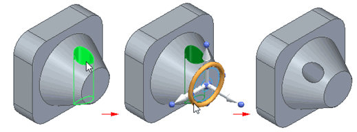

Rotate Faces command
Use the Rotate Faces command  to rotate selected faces on a part about an axis you define. Use the options on the
command bar to specify whether you want to rotate individual faces you select, the
set of faces that comprise a feature, or an entire body. You define the axis about
which you rotate the faces by selecting surface geometry, such as a cylindrical face,
selecting two keypoints, or by selecting the steering wheel.
to rotate selected faces on a part about an axis you define. Use the options on the
command bar to specify whether you want to rotate individual faces you select, the
set of faces that comprise a feature, or an entire body. You define the axis about
which you rotate the faces by selecting surface geometry, such as a cylindrical face,
selecting two keypoints, or by selecting the steering wheel.

When rotating a face, the Design Intent panel displays a list of design intent relationships to assist in rotating the selected face(s). By default, the relationships are unchecked for all rotation methods except for Synchronous Rotate.